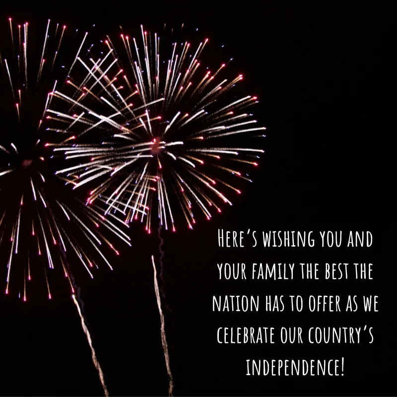
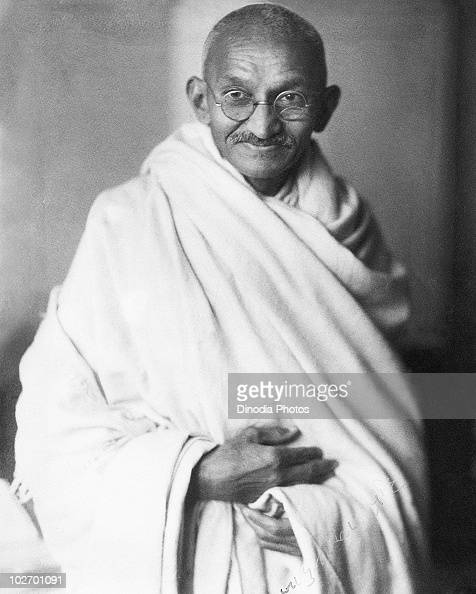
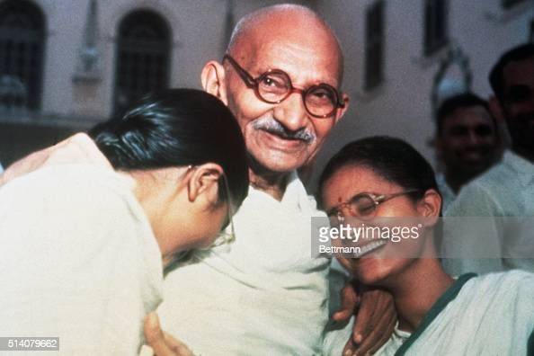

HAPPY INDEPENDENCE DAY
A Short Story About Our Independence
Independence Day, in India, national holiday celebrated annually on August 15. Independence Day marks the end of British rule in 1947 and the establishment of a free and independent Indian nation. It also marks the anniversary of the partition of the subcontinent into two countries, India and Pakistan, which occurred at midnight on August 14–15, 1947. (In Pakistan, Independence Day is celebrated on August 14.)British rule in India began in 1757 when, following the British victory at the Battle of Plassey, the English East India Company began exercising control over the country. The East India Company ruled India for 100 years, until it was replaced by direct British rule (often referred to as the British raj) in the wake of the Indian Mutiny in 1857–58. The Indian independence movement began during World War I and was led by Mohandas K. Gandhi,  who advocated for a peaceful and nonviolent end to British rule. Independence Day is marked throughout India with flag-raising ceremonies, drills, and the singing of the Indian national anthem. Additionally, various cultural programs are made available in the state capitals. After the prime minister participates in the flag-raising ceremony at the Red Fort historic monument in Old Delhi, a parade ensues with members of the armed forces and police. The prime minister then delivers a televised address to the country, recounting the major accomplishments of India during the previous year and outlining future challenges and goals. Kite flying has also become an Independence Day tradition, with kites of various sizes, shapes, and colours filling the sky. Also, to commemorate the day, government offices in New Delhi remain lit throughout the holiday, even though they are closed.
